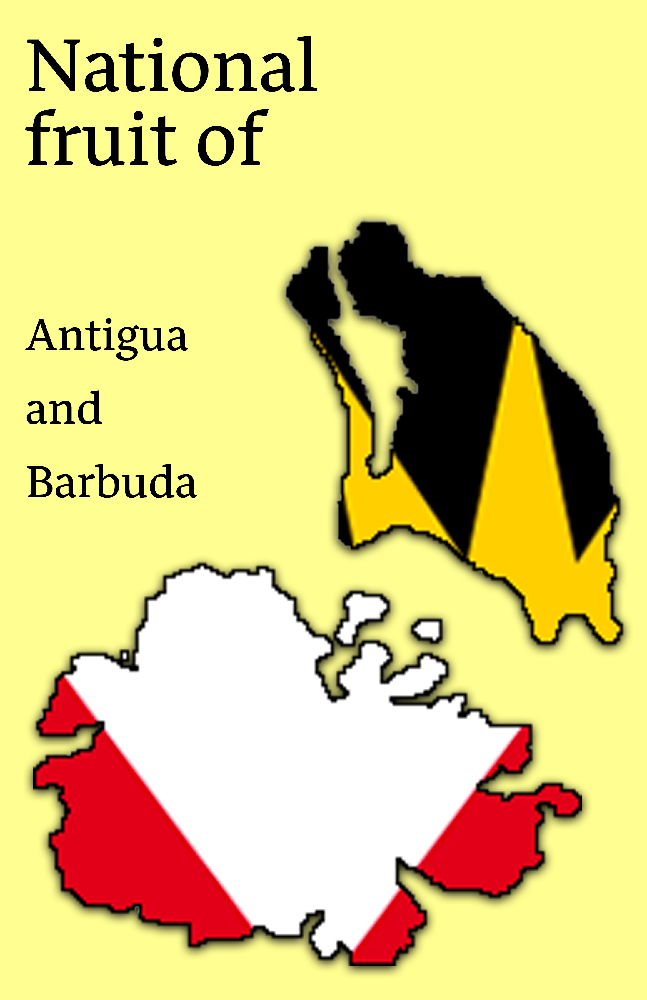
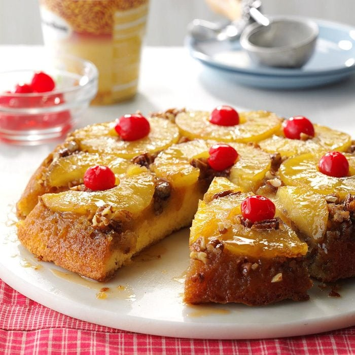
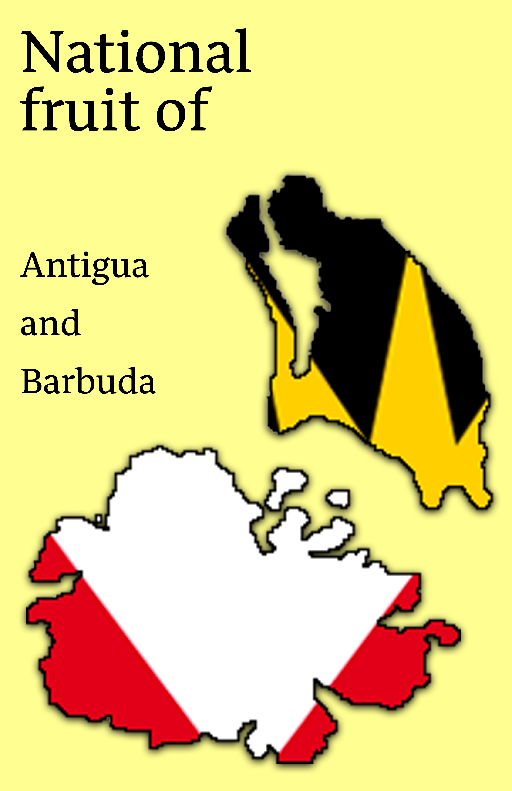
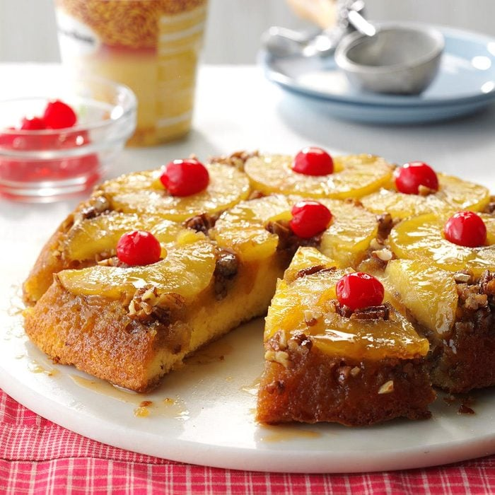

The
Pineapple
Pineapple is a tropical fruit that is native to South America, but is
now cultivated in many
other tropical regions around the world. It has
a cylindrical shape with a spiky, rough
exterior that ranges in colour
from green to yellow. Pineapple has a sweet and juicy flesh
that is
yellow in colour, with a core that is tougher and less edible. Pineapple
can be eaten
fresh or used in a variety of dishes, such as salads,
smoothies, and desserts. Pineapple
is high in vitamin C, manganese, and
bromelain, which is an enzyme that may have
anti-inflammatory properties.
Some popular uses of pineapple include juice, canned slices,
and dried fruit.
Pineapple Cake
Recipe
(click image)
 


